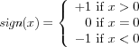

Вступление: умение программировать
Когда ты был дитям, твои родители наверняка учили тебя считать, а позже — считать "на пальцах": "1 + 1 будет 2"; "1 + 2 будет 3"; и так далее. Потом они спрашивали "сколько будет 3 + 2?", и ты считал пальцы на руке. Они программировали, а ты вычислял.
Запусти DrRacket и выбери “Beginning Student Language” ("Начинающий студент") из субменю “How to Design Programs” в меню “Language” (Язык).
(+ 1 1)
1 Терминология
Вернхяя половина DrRacket называется областью определений. В этой области ты будешь создавать программы, этот процесс называется редактированием. Как только ты что-либо меняешь в области определений, кнопка SAVE (СОХРАНИТЬ) тут же появится в верхнем правом углу. Когда ты нажмёшь SAVE (СОХРАНИТЬ) впервые, DrRacket попросит тебя ввести название файла, то есть указать место, где будет находиться твоя программа на компьютере (технически говоря, на диске). Однажды сохранив, при каждом следующем нажатии на SAVE (СОХРАНИТЬ) DrRacket будет убеждаться, что содержимое области определений безопасно сохранено в файле.
Программы состоят из выражений. Пока что, будем считать, что программы являются выражениями.
Ты видел выражения в математике. Пока что будем считать, что выражение -- это либо число, либо что-то, начинающееся с открывающейся круглой скобки “(” и заканчивающееся закрывающейся круглой скобкой “)”—
DrRacket будет вознаграждать тебя за закрытие скобок, отмечая выражение серым. -
Если ты нажмёшь RUN (ЗАПУСК), DrRacket вычислит выражения одно за другим и отобразит результат в области взаимодействия. Затем, DrRacket, твой верный слуга, ждёт твоих команд в приглашении снизу и ты можешь вводить дополнительные выражения, несмотря на то, что они исчезнут при следующем нажатии RUN (ЗАПУСК):
> (+ 1 1) 2
Введи свою первую программу в приглашении (строка, начинающаяся с ">"), нажми "Enter" (Ввод) и смотри, как DrRacket отвечает тебе результатом. Ты можешь делать это так часто, как тебе того хочется:
> (+ 2 2) 4
> (* 3 3) 9
> (- 4 2) 2
> (/ 6 2) 3
> (sqr 3) 9
> (expt 2 3) 8
> (sin 0) 0
> (cos pi) #i#i#i#i#i#i#i#i#i#i#i#i#i#i#i#i#i#i#i#i#i#i#i#i#i#i#i#i-1.0
Возможно ты считаешь, что учишь язык Racket потому, что программа называется DrRacket ("Доктор Racket"). Это не так. Ты учишь целую серию обучающих языков, созданных для этой книги, начиная с BSL. Но, как только ты освоишь эти языки, ты можешь быстро переключиться и программировать на огромном количестве разных языков, включая Racket, а также JavaScript, Python, Ruby, и многие другие скриптовые языки.
Естественно, при вычислениях DrRacket использует правила, известные
тебе и любимые тобой со школы. Также как и ты, DrRacket может
определить результат сложения только после того, как все операнды
являются обычными числами. Если операнд является выражением в
скобках—
> (+ (1) (2)) function call: expected a function after the open parenthesis, but found a number
(вызов функции: после открытой скобки ожидалась функция, но было найдено число)
In this context, to program is to write down comprehensible, arithmetic expressions, and to compute is to determine their value. With DrRacket, it is easy to explore this kind of programming and computing.
Arithmetic And Arithmetic
If programming were just about numbers and arithmetic, it would be as boring as mathematics.Just kidding: mathematics is a fascinating subject, but you knew that. You won’t need too much of it for now, though if you want to be a really great programmer, you will need to study some. Fortunately, there is much more to programming than numbers: text, truths, images, and more.
(string-append "hello" "world") (string-append "hello " "world") (string-append "hell" "o world")
"hello world"
(string-append "hello" " " "world")
You can do more with strings than append them. You can extract pieces from a string; reverse them; render all letters uppercase (or lowercase); strip blanks spaces from the left and right; and so on. And best of all, you don’t have to memorize any of that. If you need to know what you can do with strings, look it up in HelpDesk. Use F1 or the drop-down menu on the right to open HelpDesk, look at the manuals for HtDP languages (BSL) and its section on primitives. It lists all the operations in BSL and especially those that work on strings.
> (+ (string-length "hello world") 20) 31
> (number->string 42) "42"
> (string->number "42") 42
> (string->number "hello world") false
> (and true true) true
> (and true false) false
> (or true false) true
> (or false false) false
> (not false) true
true
true
false
Now try these: (>= 10 10), (<= -1 0), and (string=? "design" "tinker"). This last one is totally different again but don’t worry, you can do it.
(and (or (= (string-length "hello world") (string->number "11")) (string=? "hello world" "good morning")) (>= (+ (string-length "hello world") 60) 80))
>
(* (image-width ) (image-height ))
> (image-width (square 10 "solid" "red")) 10
> (image-width (overlay (rectangle 20 20 "solid" "blue") (circle 5 "solid" "red"))) 20
(place-image (circle 5 "solid" "green") 50 80 (empty-scene 100 100))
Let’s summarize again. To program is to write down an arithmetic expression, but you’re no longer restricted to boring numbers. With BSL, your arithmetic is the arithmetic of numbers, strings, Boolean values, and even images. To compute though still means to determine the value of the expressions(s) except that this value can be a string, a number, a Boolean, or an image.
And now you’re basically ready to write programs that make rockets fly.
Inputs And Output
The programs you have written so far are pretty boring. You write down an expression or several expressions; you click RUN; you see some results. If you click RUN again, you see the exact same results. As a matter of fact, you can click RUN as often as you want, and the same results show up. In short, your programs really are like calculations on a pocket calculator, except that DrRacket calculates with all kinds of data not just numbers.
That’s good news and bad news. It is good because programming and computing ought to be a natural generalization of using a calculator. It is bad because the purpose of programming is to deal with lots of data and to get lots of different results, with more or less the same calculations. (It should also compute these results quickly, at least faster than we can.) That is, you need to learn more still before you know how to program. No need to worry though: with all your knowledge about arithmetic of numbers, strings, Boolean values, and images, you’re almost ready to write a program that creates movies, not just some silly program for displaying “hello world” somewhere. And that’s what we’re going to do next.
x = | 1 | 2 | 3 | 4 | 5 | 6 | 7 | 8 | 9 | 10 |
y = | 1 | 4 | 9 | 16 | 25 | 36 | 49 | 64 | 81 | ? |
It turns out that making a movie is no more complicated than completing a table of numbers like that. Indeed, it is all about such tables:
x = | 1 | 2 | 3 | 4 | 5 | 6 |
y = | ? |
To be concrete, your teacher should ask you here to draw the sixth image, the seventh, and the 1273rd one because a movie is just a lot of images, some 20 or 30 of them per second. So you need some 1200 to 1800 of them to make one minute’s worth of it.
y = the image that contains a dot x2 pixels below the top.
This second part means you must supply one value—
(y 1)
(y 2)
- First,
(define (FunctionName InputName) BodyExpression)
is a function definition. You recognize it as such, because it starts with the “define” keyword. A function definition consists of three pieces: two names and an expression. The first name is the name of the function; you need it to apply the function as often as you wish. The second name—most programmers call it a parameter— represents the input of the function, which is unknown until you apply the function. The expression, dubbed body computes the output of the function for a specific input. As seen, the expression involves the parameter, and it may also consist of many other expressions. - Second,
(FunctionName ArgumentExpression)
is a function application. The first part tells DrRacket which function you wish to use. The second part is the input to which you wish to apply the function. If you were reading a Windows or Mac manual, it might tell you that this expression “launches” the (software) “application” called FunctionName and that it is going to process ArgumentExpression as the input. Like all expressions, the latter is possibly a plain piece of data (number, string, image, Boolean) or a complex, deeply nested expression.
(empty-scene 100 100)
(place-image 50 0 (empty-scene 100 100))
Think of the rocket as an object that is like the disk—
(place-image 50 10 (empty-scene 100 100)) (place-image 50 20 (empty-scene 100 100)) (place-image 50 30 (empty-scene 100 100))

All that’s needed now is to produce lots of these scenes easily and to display all of them in rapid order.
(define (create-rocket-scene height) (place-image 50 height (empty-scene 100 100)))
(create-rocket-scene 0) (create-rocket-scene 10) (create-rocket-scene 20) (create-rocket-scene 30)
> (animate create-rocket-scene)
As soon as you hit the “return” key, DrRacket evaluates the expression but
it does not display a result, not even an interactions prompt (for a
while). It open another window—
Here is what you learned in this section. Functions are useful because they can process lots of data in a short time. You can launch a function by hand on a few select inputs to ensure it produces the proper outputs. This is called testing a function. Or, DrRacket can launch a function on lots of inputs with the help of some libraries; when you do that, you are running the function. Naturally, DrRacket can launch functions when you press a key on your keyboard or when you manipulate the mouse of your computer. To find out how, keep reading. Whatever triggers a function application isn’t important, but do keep in mind that (simple) programs are just functions.
Many Ways To Compute
When you run the create-rocket-scene program from the preceding section, the rocket eventually disappears in the ground. That’s plain silly. Rockets in old science fiction movies don’t sink into the ground; they gracefully land on their bottoms, and the movie should end right there.
This idea suggests that computations should proceed differently, depending on the situation. In our example, the create-rocket-scene program should work “as is” while the rocket is in-flight. When the rocket’s bottom touches the bottom of the screen, however, it should stop the rocket from descending any further.

Open a new tab in DrRacket and start with a clean slate.
(cond [ConditionExpression1 ResultExpression1] [ConditionExpression2 ResultExpression2] .... [ConditionexpressionN ResultExpressionN])
(define (create-rocket-scene.v2 height) (cond [(<= height 100) (place-image 50 height (empty-scene 100 100))] [(> height 100) (place-image 50 100 (empty-scene 100 100))]))
With this knowledge, you can now change the course of the simulation. The goal is to not let the rocket descend below the ground level of a 100 by 100 scene. Since the create-rocket-scene function consumes the height at which it is to place the rocket in the scene, a simple test comparing the given height to the maximum height appears to suffice.
> (create-rocket-scene 5555) > (create-rocket-scene.v2 5555)
> (animate create-rocket-scene.v2)
Landing the rocket half-way under ground is ugly. Then again, you basically know how to fix this aspect of the program. As you learned from the preceding sections, DrRacket knows an arithmetic of images. Images have a center point and, when place-image adds an image to a scene, it uses this center point as if it were the image. This explains why the rocket is half way under ground at the end: DrRacket thinks of the image as if it were a point, but the image has a real height and a real width. As you may recall, you can measure the height of an image with the operation image-height, which is to images like + is to numbers. This function comes in handy here because you really want to fly the rocket only until it bottom touches the ground.
(- 100 (/ (image-height ) 2))
(place-image 50 (- 100 (image-height )) (empty-scene 100 100))
(place-image 50 (- 100 (/ (image-height ) 2)) (empty-scene 100 100))
(define (create-rocket-scene.v3 height) (cond [(<= height (- 100 (/ (image-height ) 2))) (place-image 50 height (empty-scene 100 100))] [(> height (- 100 (/ (image-height ) 2))) (place-image 50 (- 100 (/ (image-height ) 2)) (empty-scene 100 100))]))
When you think and experiment along these lines, you eventually get to the program in figure 2. Given some number, which represents the height of the rocket, it first tests whether the rocket’s bottom is above the ground. If it is, it places the rocket into the scene as before. If it isn’t, it places the rocket’s image so that its bottom touches the ground.
One Program, Many Definitions
Now imagine this. Your manager at your hot game company doesn’t like flight simulations where rockets that sink halfway into the ground. Worse, all of a sudden, this manager requests a version of the game that uses 200 by 400 scenes. This simple request forces you to replace 100 with 400 in five places in the program, which includes the animate line, and to replace 100 with 200 in three other places. Before you read on, try to do just that so that you get an idea of how difficult it is to execute this request for a five-line program. As you read on, keep in mind that real programs consists of 50,000 or 500,000 or 5,000,000 lines of code.
(define Name Expression)
(define HEIGHT 100)
(define WIDTH 100)
(define (create-rocket-scene.v4 h) (cond [(<= h (- HEIGHT (/ (image-height ) 2))) (place-image 50 h (empty-scene WIDTH HEIGHT))] [(> h (- HEIGHT (/ (image-height ) 2))) (place-image 50 (- HEIGHT (/ (image-height ) 2)) (empty-scene WIDTH HEIGHT))])) (define WIDTH 100) (define HEIGHT 100)
> (animate create-rocket-scene.v4)
The program in figure 3 consists of three definitions: one function definition and two constant definitions. The number 100 occurs only twice: once as the value of WIDTH and once as the value of HEIGHT. The last line starts the simulation, just as in version 3 of the program. You may also have noticed that it uses h instead of height for the function parameter of create-rocket-scene.v4. Strictly speaking, this change isn’t necessary because DrRacket doesn’t confuse height with HEIGHT but we did it to avoid confusing you.
When DrRacket evaluates (animate create-rocket-scene.v4), it replaces HEIGHT with 100 and WIDTH with 100 every time it encounters these names. To experience the joys of real programmers, change the 100 next to HEIGHT into a 400 and click RUN. You see a rocket descending and landing in a 100 by 400 scene. One small change did it all.
(- HEIGHT (/ (image-height ) 2))
(define ROCKET-CENTER-TO-BOTTOM (- HEIGHT (/ (image-height ) 2)))
While the order of constant definitions matters, it doesn’t matter whether you first define constants and then functions or vice versa. Indeed, if your program consisted of more than one function, it wouldn’t matter in which order you defined those. For pragmatic reasons, it is good to introduce all constant definitions first, followed by the definitions of important functions, with the less important ones bringing up the rear guard. When you start writing your own multi-definition programs, you will soon see why this ordering is a good idea.
; constants (define WIDTH 100) (define HEIGHT 100) (define MTSCN (empty-scene WIDTH HEIGHT)) (define ROCKET ) (define ROCKET-CENTER-TO-BOTTOM (- HEIGHT (/ (image-height ROCKET) 2))) ; functions (define (create-rocket-scene.v5 h) (cond [(<= h ROCKET-CENTER-TO-BOTTOM) (place-image ROCKET 50 h MTSCN)] [(> h ROCKET-CENTER-TO-BOTTOM) (place-image ROCKET 50 ROCKET-CENTER-TO-BOTTOM MTSCN)]))
The program also contains two line comments, introduced with semi-colons (“;”). While DrRacket ignores such comments, people who read programs should not because comments are intended for human readers. It is a “back channel” of communication between the author of the program and all of its future readers to convey information about the program. Once you eliminate all repeated expressions, you get the program in figure 4. It consists of one function definition and five constant definitions. Beyond the placement of the rocket’s center, these constant definitions also factor out the image itself as well as the creation of the empty scene.
How would you change the program to create a 200 by 400 scene?
How would you change the program so that it depicts the landing of a green UFO (unidentified flying object)? Drawing the UFO per se is easy:
(overlay (circle 10 "solid" "green") (rectangle 40 4 "solid" "green")) How would you change the program so that the background is always blue?
How would you change the program so that the rocket lands on a flat rock bed that is 10 pixels higher than the bottom of the scene? Don’t forget to change the scenery, too.
2 Magic Numbers
Take another look at the definition of create-rocket-scene.v5. As we eliminated all repeated expressions, all but one number disappeared from this function definition. In the world of programming, these numbers are called magic numbers, and nobody likes them. Before you know it, you forget what role the number plays and what changes are legitimate. It is best to name such numbers in a definition.
Here we actually know that 50 is our whimsical choice for an x coordinate for the rocket. Even though 50 doesn’t look like much of an expression, it actually is a repeated expression, too. In other words, we have two reasons to eliminate 50 from the function definition, and we leave it to you to do so.
One More Definition
Danger ahead! This section introduces one piece of knowledge
from physics. If physics scares you, skip this section on a first reading;
programming doesn’t require physics knowledge.
Real rockets don’t descend at a constant speed. Real cars don’t stop on the
spot. They decelerate, which is the opposite of accelerate. What this
really means is that an object first travels at a constant speed and then
the driver hits the brakes or the pilot fires some engines. The effect of
using the brakes or firing the engines is to change the speed
slowly—
(define VELOCITY 20) (define DECELERATION 1) (define (distance t) (- (* VELOCITY t) (* 1/2 DECELERATION (sqr t))))
(define (create-rocket-scene t) (cond [(<= t ROCKET-CENTER-TO-BOTTOM) (place-image ROCKET X t MTSCN)] [(> t ROCKET-CENTER-TO-BOTTOM) (place-image ROCKET X ROCKET-CENTER-TO-BOTTOM MTSCN)]))
; properties of the “world” (define WIDTH 100) (define HEIGHT 100) ; properties of the descending rocket (define VELOCITY 20) (define DECELERATION 1) ; various other constants (define MTSCN (empty-scene WIDTH HEIGHT)) (define ROCKET ) (define ROCKET-CENTER-TO-BOTTOM (- HEIGHT (/ (image-height ROCKET) 2))) (define X 50) ; functions (define (create-rocket-scene.v6 t) (cond [(<= (distance t) ROCKET-CENTER-TO-BOTTOM) (place-image ROCKET X (distance t) MTSCN)] [(> (distance t) ROCKET-CENTER-TO-BOTTOM) (place-image ROCKET X ROCKET-CENTER-TO-BOTTOM MTSCN)])) (define (distance t) (- (* VELOCITY t) (* 1/2 DECELERATION (sqr t))))
> (animate create-rocket-scene.v6)
In comparison to the previous versions of create-rocket-scene, this final version teaches you that a program may consist of more than one function definition and that one function definition (create-rocket-scene.v6) can refer to other function definitions (distance).
In a way, this revelation shouldn’t surprise you. Even the first version of create-rocket-scene used + and / and other functions. It’s just that you think of those as built into DrRacket. While + and / are indeed an intrinsic part of the programming language, some others are not. For example, most of the “image arithmetic” and a good part of the “string arithmetic” are just function definitions that we created a long time ago and that are added to your definitions area when you click RUN.
As you become a true blue programmer you will find out that programs consist of many function definitions and many constant definitions. You will also see that functions refer to each other all the time. What you really need to practice is to organize such collections of definitions so that you can read them easily even months after completion. After all, you or your manager will want to make changes to these programs, and if you don’t know how to read them and if you didn’t organize them well, you will have a difficult time with even the smallest task. Otherwise you mostly know what there is to know and you can program.
You Are a Programmer Now
The claim that you are a programmer may have come as a surprise to you at the end of the preceding section but it is true. You know all the mechanics that there is to know. You know that programming and computing is about arithmetic of numbers, strings, images, and whatever other data your chosen programming languages supports. You know that programs consist of function and constant definitions. You know, because we have told you, that in the end, it’s all about organizing these definitions properly. Last but not least, you know that DrRacket and the teackpacks support lots of other functions and that DrRacket HelpDesk explains what these functions do.
You might think that you still don’t know enough to write programs that react to keystrokes, mouse clicks, and so on. As it turns out, you do. In addition to the animate function, the "universe" teachpack provide other functions that hook up your programs to the keyboard, the mouse, the clock and other moving parts in your computer. Indeed, it even supports writing programs that connect your computer with anybody else’s computer around the world. So this isn’t really a problem.
From a theoretical perspective, you are missing one piece of the puzzle: the ability to define functions that, when called, compute forever. This may sound useless and difficult to achieve. It is neither. Here is how you define such a program:
(define (run ul) (run 42)) (run 5) If you click RUN, you get no result. Actually, you should immediately move the mouse to the STOP button, click, hold the mouse button down, and wait for DrRacket to stop your run-away program.
In short, you have seen almost all the mechanics of putting together programs. If you read up on all the functions that are available, you can write programs that play interesting computer games, run simulations, or keep track of business accounts. The question is whether this really means you are a programmer.
Stop! Think! Don’t turn the page yet.
Not!
When you look at the “programming” book shelves in any random book store of some unnamed book chain, not to speak of certain parts of college book stores, you will see loads of books that promise to turn lead into gold, that is, make you a programmer in 21 days or faster. There are also books by cautious authors who think you need to stretch the same or similar material over the entire course of a semester. If you have worked through the first six sections of this book, however, you know that neither of these approaches can create a solid understanding of programming.
Acquiring the mechanical skills of programming—
Programming is far more than the mechanics of language acquisition. It is about reading problem statements, extracting the important concepts. It is about figuring out what is really wanted. It is about exploring examples to strengthen your intuitive understanding of the problem. It is about organizing knowledge and it is about knowing what you don’t know yet. It is about filling those last few gaps. It is about making sure that you know how and why your code works, and that you and your readers will do so in the future. In short, it is really about solving problems systematically.
The rest of this book is all about these things; very little of the book’s
content is about the mechanics of BSL or other HtDP languages. The book
shows you how good computer programmers think about problems,
and—
Oh, and by the way, the rest of the book uses a tone that is appropriate for a serious text.
What the book is not about: Many early books on programming and even some of today’s books teach you a lot about the authors’ favorite application discipline for programming: mathematics, physics, music, accounting, and so on. To some extent that is natural, because programming is useful in those areas. Then again, it forces you to know a lot (or at least something) about those disciplines. This book really focuses on programming and problem solving and what computer science can teach you in this regard. We have made every attempt to minimize the use of knowledge from other areas; for those few occasions when we went too far, we apologize.